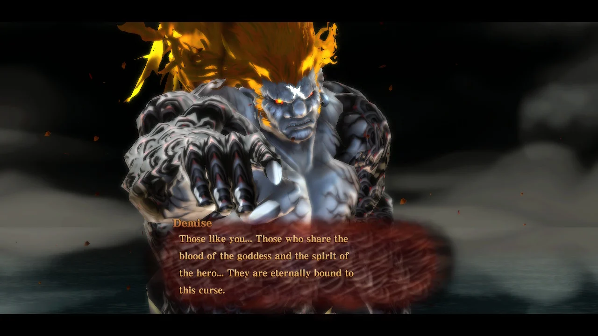

The Legend of Zelda Timeline Summary
The Beginning of the Timeline
Skyward Sword
I haven’t played any of the games myself but, from watching cutscenes in the games and reading, here’s what I understand of the timeline. This is just a quick summary so there’s quite a lot left out. So, at the beginning of the timeline there’s Skyward Sword. This game shows how the Master Sword was created. Link’s companion in this game is the spirit, Fi, that lives in the Master Sword, and for the rest of the timeline she is asleep in the sword. In the final battle of this game Demise curses the hero’s spirit, Link, to be forever followed by an incarnation of his hatred. This leads to a cycle of reincarnation for the villain, typically some form of Ganon, that follows the hero’s cycle of reincarnation. The curse also mentions “Those who share the blood of the goddess” this is referring to Zelda. The Zelda in Skyward Sword is a reincarnation of the goddess Hylia, the Zeldas after Skyward Sword are descendants of this Zelda, not reincarnations.
The Timeline Split
Ocarina of Time
Ocarina of Time splits the timeline into three, the two timelines where the hero is triumphant and the timeline where the hero was defeated during his battle with Ganondorf. The Link in this game is originally a child but when he pulls the Master Sword from it’s pedestal he wakes up to find he is 7 years in the future and 7 years older. The two “triumphant” timelines are caused by the Ocarina of Time being used to send Link back in time, this becomes the “child” timeline. In this timeline he is sent back to the moment he pulled the Master Sword. After he is sent back his companion fairy, Navi, disappears so he sets out on a journey to find her leading to the events in Majora’s Mask. The other is the “adult” timeline that he left behind, it continues on with no hero, or hero’s spirit to reincarnate, which leads to problems when Ganon eventually breaks free from his seal and there is no hero to stop him.
The Three Timelines:
- The Defeated Hero Timeline
- The Triumpant Hero Timelines
- --Child Timeline
- --Adult Timeline